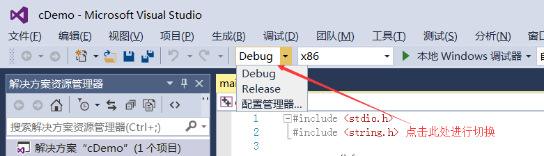

首页 > 编程笔记
Debug和Release的区别是什么（非常详细）？
VIP会员（带永久答疑）郝翔宇昨天问了我一个问题，他说无法在 Dev C++ 下调试，不管在任何地方打断点，一调试就闪退，程序不会在断点处暂停。

我思考了一下没有答案，决定远程操作，结果发现郝翔宇在编译和链接程序时，选择的是 Release 版本，不是 Debug 版本；然而 Release 版本是不支持调试的，只有 Debug 版本才支持调试。
你没听错，不是任何一个程序都可以调试的，程序中必须包含额外的辅助信息才能调试，否则调试器也无从下手。
编译器还会尽量降低 Release 版本的体积，把没用的数据一律剔除，包括调试信息。
最终，Release 版本是一个小巧精悍、非常纯粹、为用户而生的程序。
在开发过程中，我们一般使用 Debug 版本，只有等到开发完成，确认没有任何 Bug 之后，希望交给用户时再生成 Release 版本。
基本所有的集成开发环境（IDE）都可以在 Debug 版本和 Release 版本之间进行切换，下面是 VS2015 下的截图：
高级VIP会员还可以提供一对一答疑，有针对性地解决大家在学习过程中遇到的问题，让你少走弯路，尽快学会编程。答疑老师是C语言中文网站长——严长生。
所有VIP会员都是永久的，没有时间限制。一日开通，终身享受。
我思考了一下没有答案，决定远程操作，结果发现郝翔宇在编译和链接程序时，选择的是 Release 版本，不是 Debug 版本；然而 Release 版本是不支持调试的，只有 Debug 版本才支持调试。
Debug 版本
Debug 是“调试”的意思，Debug 版本就是为调试而生的，编译器在生成 Debug 版本的程序时会加入调试辅助信息，并且很少会进行优化，程序还是“原汁原味”的。你没听错，不是任何一个程序都可以调试的，程序中必须包含额外的辅助信息才能调试，否则调试器也无从下手。
Release 版本
Release 是“发行”的意思，Release 版本就是最终交给用户的程序，编译器会使尽浑身解数对它进行优化，以提高执行效率，虽然最终的运行结果仍然是我们期望的，但底层的执行流程可能已经改变了。编译器还会尽量降低 Release 版本的体积，把没用的数据一律剔除，包括调试信息。
最终，Release 版本是一个小巧精悍、非常纯粹、为用户而生的程序。
总结
Debug 版本的存在是为了方便程序员开发和调试，性能和体积不是它的重点；Release 版本是最终交给用户的程序，性能和体积是需要重点优化的两个方面。在开发过程中，我们一般使用 Debug 版本，只有等到开发完成，确认没有任何 Bug 之后，希望交给用户时再生成 Release 版本。
基本所有的集成开发环境（IDE）都可以在 Debug 版本和 Release 版本之间进行切换，下面是 VS2015 下的截图：

关于VIP会员
普通VIP会员可以阅读C语言中文网的所有收费文章，这些文章都是我们精心编辑的，都是干货，长期阅读大有裨益。高级VIP会员还可以提供一对一答疑，有针对性地解决大家在学习过程中遇到的问题，让你少走弯路，尽快学会编程。答疑老师是C语言中文网站长——严长生。
所有VIP会员都是永久的，没有时间限制。一日开通，终身享受。
>>>请猛击这里了解VIP会员<<<
关注公众号「站长严长生」，在手机上阅读所有教程，随时随地都能学习。内含一款搜索神器，免费下载全网书籍和视频。

微信扫码关注公众号